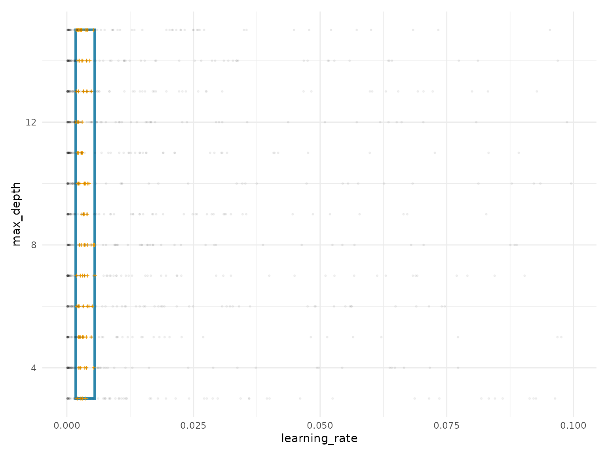

Getting Started with spacefinder
getting-started.RmdIntroduction
The spacefinder package helps you identify promising
hyperparameter subspaces from benchmark data. Instead of exploring the
entire hyperparameter space, you can focus on regions that consistently
produce high-performing models.
Example Data
We’ll use the included benchmark_data dataset, which
contains synthetic hyperparameter tuning results:
data("benchmark_data", package = "spacefinder")
head(benchmark_data)
#> task learning_rate max_depth optimizer auc
#> <char> <num> <int> <char> <num>
#> 1: task1 0.0555159953 10 RMSprop 0.5000000
#> 2: task1 0.0647479824 4 Adam 0.5000000
#> 3: task1 0.0007218029 11 SGD 0.9455143
#> 4: task1 0.0309986570 14 RMSprop 0.8306492
#> 5: task1 0.0084185357 13 Adam 0.9496575
#> 6: task1 0.0036081771 15 RMSprop 0.9499609
# Summary statistics
summary(benchmark_data$auc)
#> Min. 1st Qu. Median Mean 3rd Qu. Max.
#> 0.5000 0.6095 0.9329 0.8062 0.9498 0.9500
cat("\nConfigurations with AUC > 0.9:", sum(benchmark_data$auc > 0.9), "\n")
#>
#> Configurations with AUC > 0.9: 564The dataset includes: - 5 tasks (different datasets) - 200
configurations per task - Hyperparameters: learning_rate,
max_depth, optimizer - Performance:
auc (Area Under ROC Curve)
Creating a Task
Define a subspace task specifying the data, target measure, and hyperparameters:
task <- TaskSubspace$new(
data = benchmark_data,
target_measure = "auc",
hps = c("learning_rate", "max_depth")
)
# Alternative: formula interface
task <- TaskSubspace$new(
data = benchmark_data,
formula = auc ~ (learning_rate + max_depth)
)Training a Learner
We’ll use the Box learner, which fits axis-aligned hyperrectangles (simple bounds per hyperparameter):
# Initialize learner
learner <- LearnerSubspaceBox$new(task)
# Train on top 10% of configurations
learner$train(q_val = 0.9)The q_val = 0.9 parameter means we use only
configurations with performance above the 90th percentile (top 10%) for
each task.
Extracting Results
Coefficients
Get the fitted hyperparameter bounds:
bounds <- coef(learner)
print(bounds)
#> hyperparameter min max
#> <char> <num> <num>
#> 1: learning_rate 0.001746421 0.00554191
#> 2: max_depth 3.000000000 15.00000000The learned optimal ranges: - learning_rate: between
0.0017 and 0.0055 - max_depth: between 3 and 15
Summary
Get a comprehensive overview:
summary(learner)
#> SUMMARY
#> --------------------------------------------------
#> Property Value
#> ---------------------------- -------------------------
#> Target Measure auc
#> Numeric Hyperparameters learning_rate, max_depth
#> Categorical Hyperparameters None
#>
#>
#> COEFFICIENTS
#> --------------------------------------------------
#> hyperparameter min max
#> --------------- ---------- -----------
#> learning_rate 0.0017464 0.0055419
#> max_depth 3.0000000 15.0000000
#>
#>
#> STATUS
#> --------------------------------------------------
#> observations
#> -------------
#> 100The summary shows: - Summary: Task information - Coefficients: Fitted bounds - Status: Number of observations used for fitting
Visualization
Visualize the fitted subspace:
autoplot(learner)
The plot shows: - Blue rectangle: Fitted subspace bounds - Orange crosses: Top-performing configurations used for fitting - Gray points: All configurations (background)
Next Steps
Learn more about spacefinder:
-
vignette("categorical-hyperparameters"): Handle categorical variables (e.g., optimizers) -
vignette("learner-comparison"): Compare Box, Polygon, and Ellipsoid learners -
vignette("density-estimation"): Add probabilistic density withaugment()
Session Info
sessionInfo()
#> R version 4.5.2 (2025-10-31)
#> Platform: x86_64-pc-linux-gnu
#> Running under: Ubuntu 24.04.3 LTS
#>
#> Matrix products: default
#> BLAS: /usr/lib/x86_64-linux-gnu/openblas-pthread/libblas.so.3
#> LAPACK: /usr/lib/x86_64-linux-gnu/openblas-pthread/libopenblasp-r0.3.26.so; LAPACK version 3.12.0
#>
#> locale:
#> [1] LC_CTYPE=C.UTF-8 LC_NUMERIC=C LC_TIME=C.UTF-8
#> [4] LC_COLLATE=C.UTF-8 LC_MONETARY=C.UTF-8 LC_MESSAGES=C.UTF-8
#> [7] LC_PAPER=C.UTF-8 LC_NAME=C LC_ADDRESS=C
#> [10] LC_TELEPHONE=C LC_MEASUREMENT=C.UTF-8 LC_IDENTIFICATION=C
#>
#> time zone: UTC
#> tzcode source: system (glibc)
#>
#> attached base packages:
#> [1] stats graphics grDevices utils datasets methods base
#>
#> other attached packages:
#> [1] ggplot2_4.0.1 data.table_1.17.8 spacefinder_0.2.1.9001
#>
#> loaded via a namespace (and not attached):
#> [1] Matrix_1.7-4 bit_4.6.0 gtable_0.3.6 jsonlite_2.0.0
#> [5] Rmpfr_1.1-2 compiler_4.5.2 Rcpp_1.1.0 jquerylib_0.1.4
#> [9] systemfonts_1.3.1 scales_1.4.0 textshaping_1.0.4 yaml_2.3.12
#> [13] fastmap_1.2.0 lattice_0.22-7 R6_2.6.1 labeling_0.4.3
#> [17] patchwork_1.3.2 generics_0.1.4 knitr_1.50 backports_1.5.0
#> [21] checkmate_2.3.3 desc_1.4.3 bslib_0.9.0 RColorBrewer_1.1-3
#> [25] rlang_1.1.6 cachem_1.1.0 CVXR_1.0-15 xfun_0.54
#> [29] S7_0.2.1 fs_1.6.6 sass_0.4.10 bit64_4.6.0-1
#> [33] cli_3.6.5 withr_3.0.2 pkgdown_2.2.0 digest_0.6.39
#> [37] grid_4.5.2 gmp_0.7-5 lifecycle_1.0.4 vctrs_0.6.5
#> [41] evaluate_1.0.5 glue_1.8.0 farver_2.1.2 ragg_1.5.0
#> [45] rmarkdown_2.30 tools_4.5.2 htmltools_0.5.9